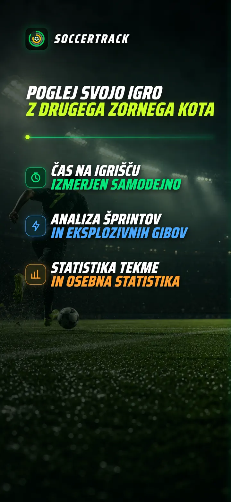
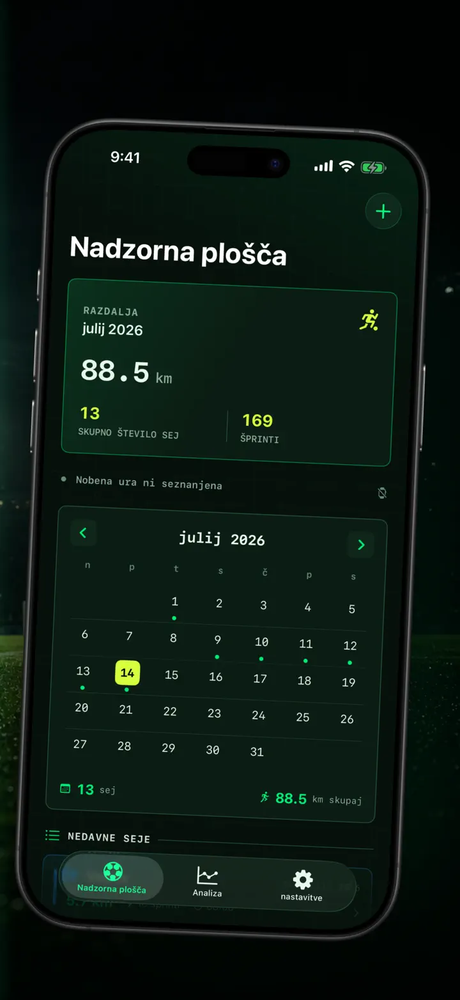
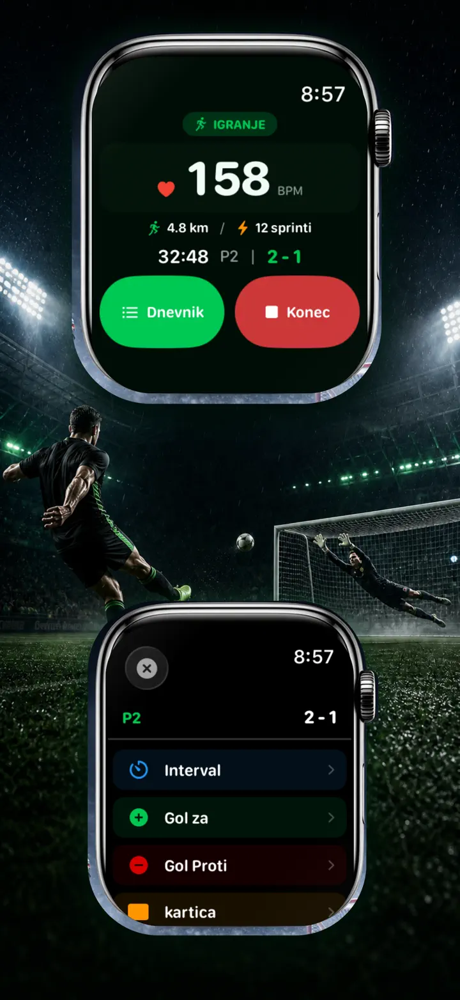
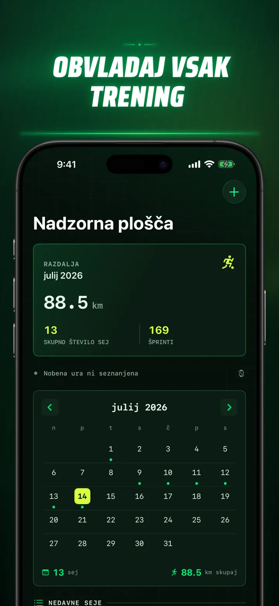
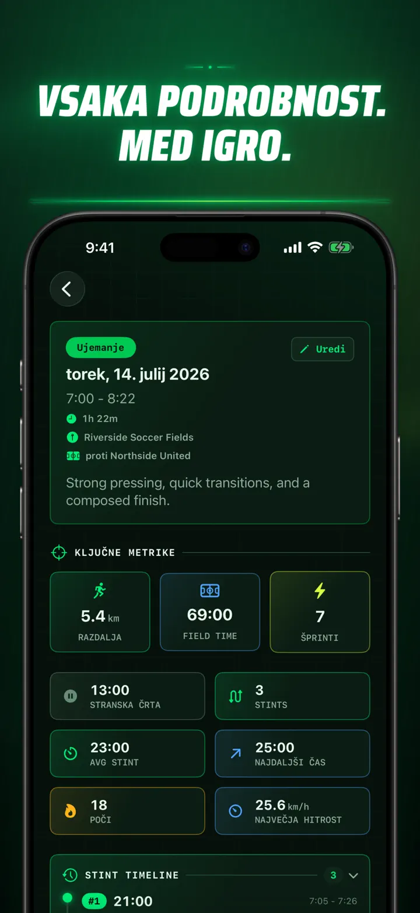
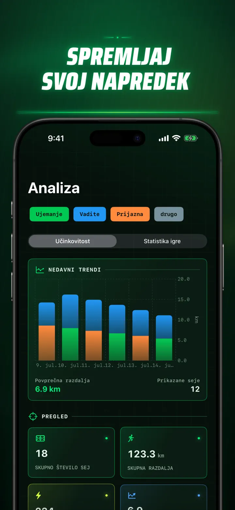
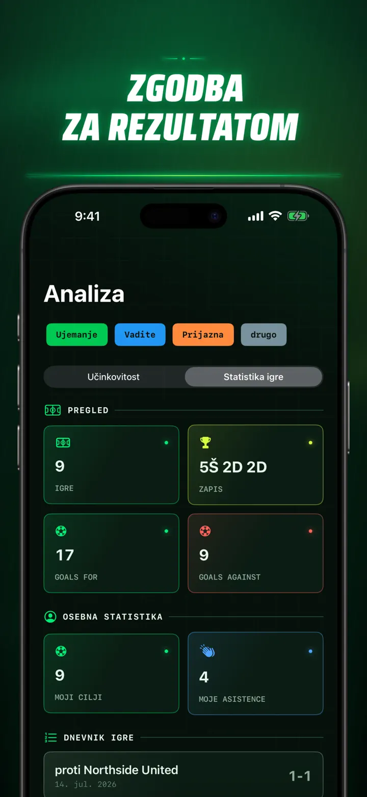
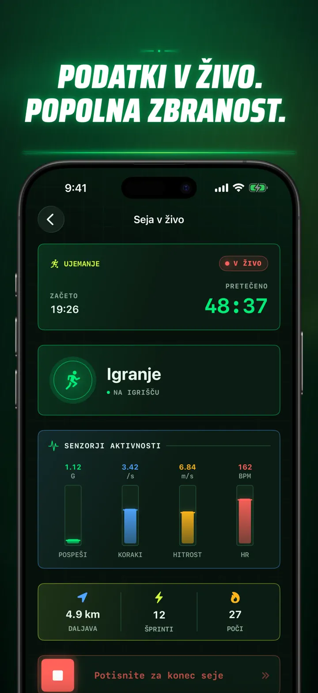
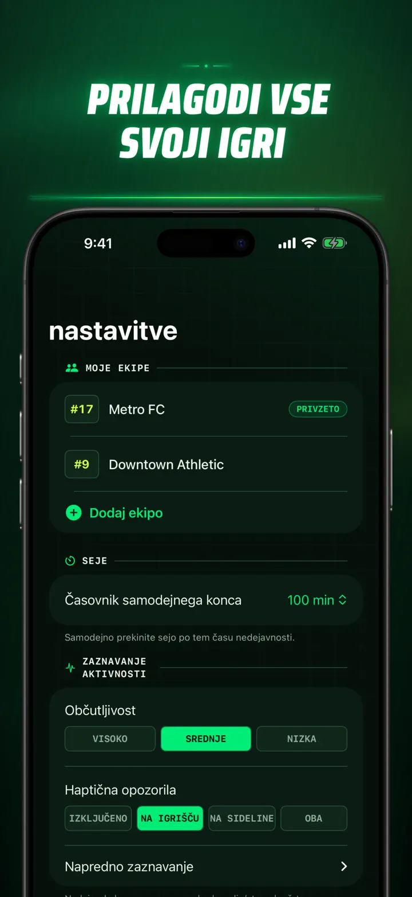
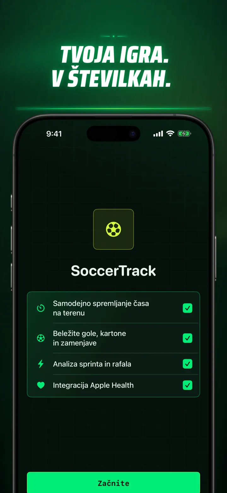

Soccer Time Track
Nogomet: čas igre & analiza
Začnite vadbo in igrajte. Apple Watch samodejno loči čas na igrišču in klopi ter beleži meritve v živo, šprinte, dogodke in trende.
Prenesi iz trgovine App Store
O aplikaciji
Poglejte svojo tekmo drugače.
Soccer Time Track spremeni Apple Watch v spremljevalca za dan tekme za igralce, ki želijo razumeti več kot končni rezultat. Začnite na zapestju, osredotočite se na igro in nato na iPhonu preglejte podrobno sliko svoje zmogljivosti.
SAMODEJNI ČAS NA IGRIŠČU
Ugotovite, kdaj ste bili res v igri. Signali gibanja, vadbe in lokacije pomagajo razlikovati med igranjem, nizko aktivnostjo in časom na klopi. Dobite:
- Čas na igrišču in klopi
- Igralne intervale in jasno časovnico
- Podroben pregled poteka celotne vadbe
TEKMA Z ZAPESTJA
Izberite Tekma, Vadba, Prijateljska ali Drugo. Med igro zabeležite:
- Gole za in proti
- Svoje gole in asistence
- Rumene in rdeče kartone
- Menjave in spremembe delov tekme
VAŠA IGRA V ŠTEVILKAH
Presezite minute s podatki, kot so:
- Razdalja
- Povprečna in največja hitrost
- Šprinti in visokointenzivni pospeški
- Srčni utrip in aktivne kalorije
- Kadenca in pospešek
PODATKI V ŽIVO, POPOLNA ZBRANOST
Seznanjeni iPhone lahko prikazuje meritve v živo, medtem ko Apple Watch nadaljuje beleženje vadbe. Vi ostanete osredotočeni na tekmo, podatki pa nastajajo v ozadju.
SPREMLJAJTE NAPREDEK
Shranite tekme, vadbe, prijateljske tekme in druge seje v eno zgodovino. Raziščite trende in osebne rekorde, primerjajte zmogljivosti ter dodajte ekipo, številko dresa, nasprotnika, lokacijo in opombe, da ohranite zgodbo vsakega rezultata.
Potrebujete podatke drugje? Izvozite seje, igralne intervale in dogodke tekme v obliki CSV ali JSON.
ZA APPLE WATCH IN APPLE HEALTH
Z vašim dovoljenjem Soccer Time Track uporablja podatke o vadbi, srčnem utripu, gibanju in lokaciji za pripravo vpogledov ter shranjuje dokončane nogometne vadbe v Apple Health. Samodejno sledenje zahteva Apple Watch. Sejo lahko dodate tudi ročno na iPhonu.
VAŠI PODATKI, VAŠA TEKMA
Seje ostanejo na vaših napravah in, ko je sinhronizacija iCloud vključena, v vaši zasebni zbirki iCloud. Soccer Time Track ne zahteva računa, ne prikazuje oglasov in ne uporablja analitike tretjih oseb.
Nehajte ugibati, koliko ste igrali. Poglejte, kaj ste naredili s svojim časom.
Pravilnik o zasebnosti: https://masawata.net/SoccerTimeTrack/privacy-policy.html Pogoji uporabe: https://www.apple.com/legal/internet-services/itunes/dev/stdeula/
Posnetki zaslona









Soccer Time Track
Začnite vadbo in igrajte. Apple Watch samodejno loči čas na igrišču in klopi ter beleži meritve v živo, šprinte, dogodke in trende.
Prenesi iz trgovine App Store